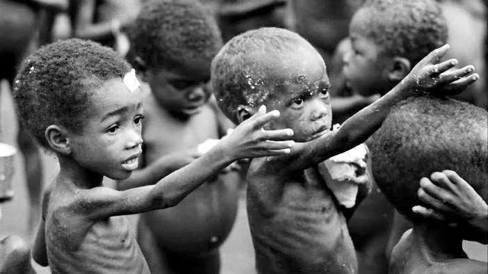
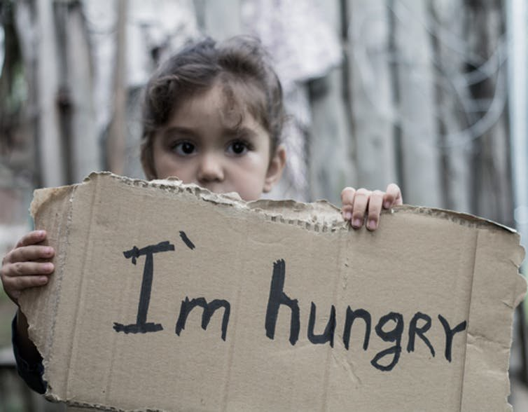

Home
Philosophy
Food Waste
Hunger
Facts and Statistics
Prevent Food Waste
Get In Touch With Us
Hunger
What is Hunger?
The term hunger refers to a condition in which a person is unable to eat enough food in order to
meet basic nutritional needs for a long period of time.
The severe lack of food can lead to weakness of the body and in some cases,
it can possibly lead to deficiency diseases and death.
Examples of Deficiencies or Complications Hunger Causes:
- Micronutrient deficiencies.
- Malnutrition and growth issues.
What Causes Hunger?
Understandably there are several things that contribute and cause hunger globally,
but here is a list of the 10 most common factors that cause hunger:

1. Poverty - This mainly due to poor families that cannot afford nutritious food, 3 times a day, 365 days a year.
2. Food Shortages - This is related to food insecurity, mainly pertaining to farmers across Africa.
Who face "hungry seasons" which means that food supplies from the previous harvest are exhausted,
these occur annually.
3. War and Conflict - This leads to mass displacement and abandoned fields, this results in crop failure,
paired with inflation rates makes imported food extremely expensive and unaffordable.
Conflicts are one of the leading causes of hunger.
4. Climate Change - Corps are often plagued by extreme climates or not the common
whether they are used to. Leading to destroyed or unfit harvest, in turn affecting
the hunger rates of the country.
5. Poor Nutrition - Mainly entailing the fact that we all need access to nutritious food
that is vital to our well being, poor nutrition is when a person lacks access to nutritious food.
6. Poor Public Policies - Caused by poor infrastructure and low investments in the
agricultural sector lead to food not being able to reach people who need it the most.
7. Economy - Economic resilience of a country can largely affect its hunger rates and is
nutritional resilience. Leading to the majority of the population living under the poverty
line, further increasing the global hunger rates.
8. Gender Inequality - Most women in impoverished regions are responsible for the maintenance
of crops on a farm, while these women are helping provide quality corps to the world.
They are constantly oppressed from making large decisions, as they are usually a minority in these forums.
9. Forced Migration - This cause is a little bit different from the war and conflict point.
This is because they are several factors contributing to forced migration, nevertheless,
refugees that migrate to third-world countries that have limited resources, to begin with,
only puts more strain on the country's economy and resources. Leading to the uneven or
unfair distribution of resources thus, contributing to hunger directly.
and of course one of the most common causes of hunger:
10. Food Waste - This is increasingly becoming a serious issue worldwide in regards to hunger,
as not only does food get wasted, but to produced that food there were several resources used.
Thus, wasting valuable resources that could potentially help save a life.
The food that ends up binned is no longer safe for consumption as micro bacteria and
other harmful and unsanitary things have already come into contact with the food.
Once the food begins decaying it produces carbon dioxide further adding 3.3 billion tons
of greenhouse gases to the atmosphere.

Return to the Homepage